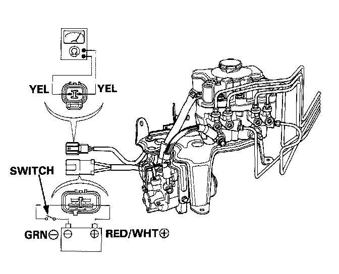

Hydraulic Control Assembly - Antilock Brakes: Testing and Inspection

Solenoids Leak Test
NOTE: If a solenoid leaks excessively, the brake fluid level in the modulator reservoir tank will rise when operating the ABS motor. The modulator reservoir may also overflow.
1. Connect an ohmmeter between the YEL and YEL terminals of the accumulator pressure switch connector.
2. Attach the positive (+) lead of a fully charged 12 V battery to the RED/WHT terminal of the power unit motor connector and negative (-) lead to the GRN terminal, and install a switch between as shown.
3. Turn the switch on to allow sufficient pressure to build up within the accumulator and check for continuity. If the ohmmeter shows continuity (pressure switch turned on), run the power unit for 10 seconds more, then turn the switch off.
- Check if the solenoid hisses or squeaks. Replace the modulator if the solenoid hisses or squeaks.
- Check the pressure switch for continuity within 30 minutes. It is normal if there is continuity. If there is no continuity, a solenoid is faulty and the modulator must be replaced.